You Cannot Record a Sigh
Editorial
This project provided a sufficient condition for real dialogues to happen: six good friends as participants and a glass of water in front of a window. All dialogues were virtual. Each of them lasted one and a half hours. No predetermined topics; the topics occurred naturally. All the conversations were recorded.
After all of the dialogues, I transcribed the recordings. While doing so, I realized over the course of the dialogues, the participants were merely focused on shaping their own personal images, even if those images were unclear. The dialogues have now become performances. Ones revolving around who we are, what we think, and how we project ourselves to the world.
But the question is, as the artist Lynn Hershman Leeson asks, "Where does performance begin and ordinary life give way? Or is all of life a performance?" There is no way you can avoid performance when you are being recorded. But when you are not being recorded, are you still performing? You cannot record a dialogue, as you cannot record a sigh.
This is a book with appendix only. Appendix contains the transcripts from my friends' speaking, along with three index. Appendix Index A is my portion in the dialogue; Appendix Index B is a collection of images related to the words; Appendix Index C is topics repeatedly occurred in the six dialogues.
Format:
Pages:
Paper:
Binding:
Paprika
Editorial
Human have lived in intimate relationship with so-called “Wild” landscapes since time immemorial. But our current notion of Wilderness is a fabrication, an ongoing colonial project of cleansing under a racialized veil of purity. By engaging alternate methods of seeing and understanding the world around us as neither natural and wild, nor fabricated and controlled, we hope this issue serves as an entry point into the larger collective and ongoing work of reimaging our planetary relationships and opening spaces for abundant futures.
Edited by Blanca Begert and Jen Shin, Graphic Design by Yuan Gao and Wenwen Zhang.
The Mountain
Poster
This poster is made for Yale Photo’s weekly Visiting Artist Lectures with Rick Alverson, and a screening of his movie, The Mountain. Fascinated with the theme, Rick Alverson reveals human connection and alienation on the way to the peak of “the mountain” in his movie.
Format:
Print:
Paper:
Julika Rudelius
IDONTKNOW
Made for Yale Graphic Design’s visiting artist Julika Rudelius, the gesture of the illustration is captured from her movie Forever.
Format:
Print:
Paper:
Irma Boom
IDONTKNOW
Matthew Carter
IDONTKNOW
This website is an interactive poster made for visiting letterform critic Matthew Carter. The idea is to integrate sound with typography. Multiple impromptu voices are delivered as responses to each letter. The dynamic web-based typeface is designed using HTML and CSS. Collaborated with Julia Schafer.
The View
Interactive
The View is an AR game about “point of view”. The players are assigned to put on different clothes, labeled with designed numbers which are identified as the trackers for AR objects. The players need to move their bodies, collect messages from the AR objects, and then link all the messages to a sentence as the passcode to win the game. The passcode is a quote from the British author, John le Carré: “a desk is a dangerous place from which to view the world”. The game becomes a nudge to link virtual space with physical movement.
Something from Nothing
Environmental
What can you take from an empty space? How can you experience the existence of the emptiness? We create something from nothing, a sculpture of emptiness within a space of emptiness. Taken from the negative space of Room 114, we create an inflatable sculpture whose shape is exactly the same as that of the room. The invisible substance, the air, become the strength of space changing. A margin was intentionally retained for participants to stand in and observe, touch and squeeze. We respond to the question: how can a sculpture evoke spontaneous interaction between people and space?
A Thing
Image Making
During the past few decades, the Internet has irreversibly penetrated into all sorts of everyday scenarios, where we are prone to ignore the existence of the Internet due to its invisibility. The power of the Internet, however, has twisted the medium by which we perceive nature, art and everyday life, the attitude with which we anticipate social activities and mass media. The Internet has become “a thing”, which lives in between the real and the fake, the virtual and the physical, the visible and the invisible.
Format:
Pages:
Paper:
Binding:
Alone Biography
Poster
This poster is made in Michael Rock’s workshop, Five Obstacles. Each of us is assigned to design a poster for one of our classmate’s biography. My design subject, Yuanbo, shares with me a story about her relationship with her family, and the aloneness she has endured from the past. Instead of showing the whole story, I only keep the very beginning and the end. In the middle, I cut the paper apart as a figure of “aloneness”. It also manifests her suffering from the family experience which has exerted an indelible influence on her.
Format:
Print:
Paper:
Lining Cusing
IDONTKNOW
Lining Cusing is an exquisite slab serif originally designed as ATF Lining Cushing No.2, 12pt. The type is monotone in appearance and has small inclined serifs. Captials are wide, ascenders and descenders are short. Figures are ranging.
HUTOINGism
Identity, Editorial
HUTONGism is an ongoing research project that collectively explores the potential of the hutong, a type of urban vernacular in Beijing, as a living condition in highly dense environment. The hutong has developed from gridded residential neighborhoods into dynamic mixed-use complexes. We imagine the hutong as a collective house: alleyways as living rooms, courtyard houses as bedrooms, shops as pantries, and restaurants as dining rooms. Different from high-rise residences, its collective attributes suggest alternative ways of living in high density. We consider the hutong as an inspiration for vibrant urban community.
The works explore the hutong through observations, interpretations, and design interventions presented by means of photos and videos, models and drawings.
Curator and Exhibition Design: Baolin Shen, Jingqiu Zhang
Graphic Design: Wenwen Zhang
Delicious Design
Identity
The 751 International Design Festival is an independent design festival held in Beijing Design Week. The theme of 2019 is Delicious Design, providing a venue to explore aesthetic appreciation, emotional connection and technological experience revolving around food design. This project was a proposal made during the period of internship in 2x4 Beijing.
 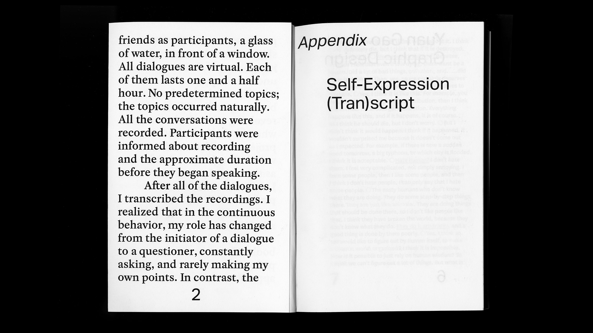
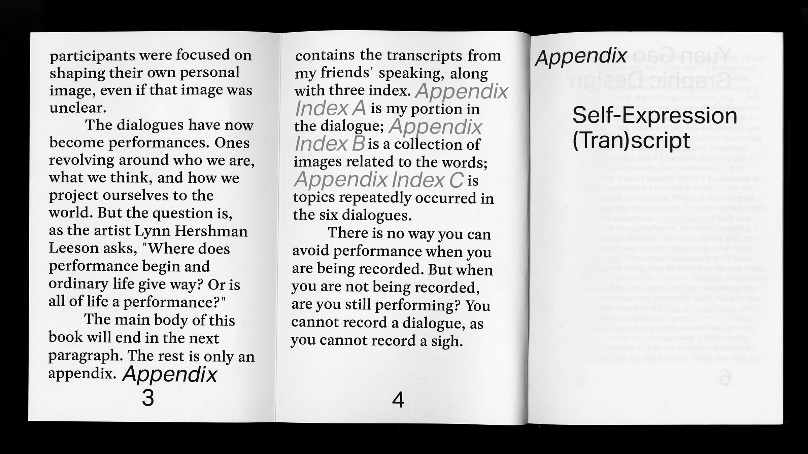
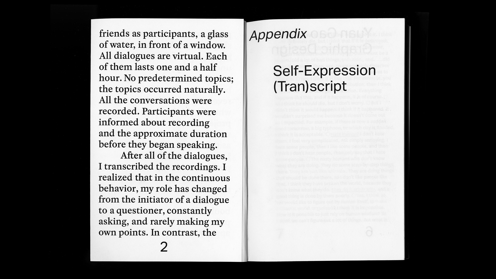
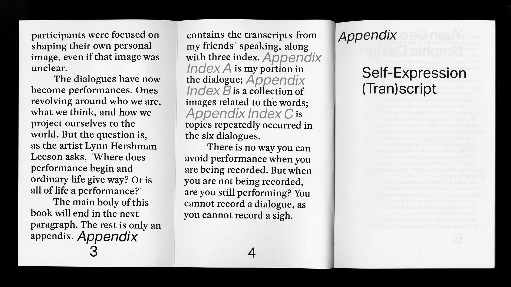
 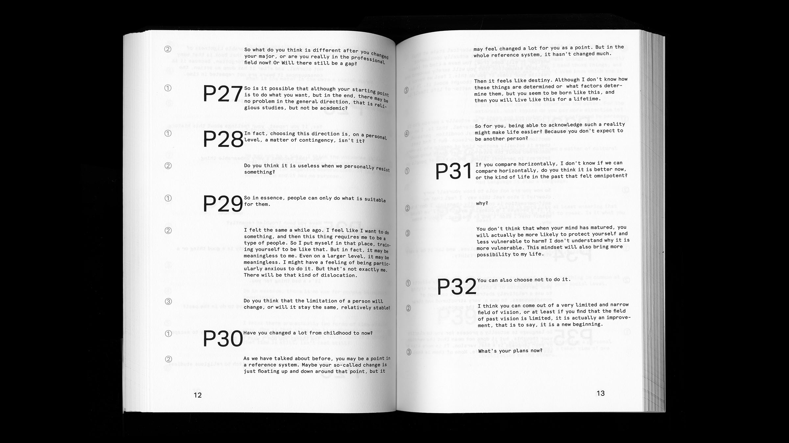
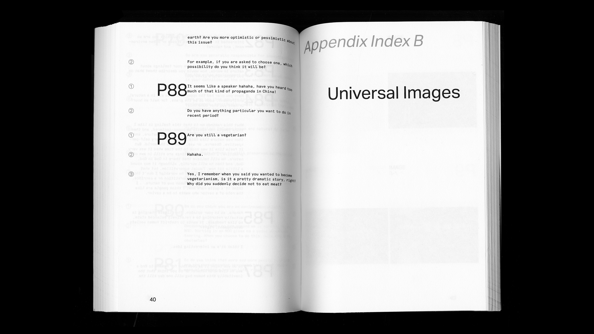
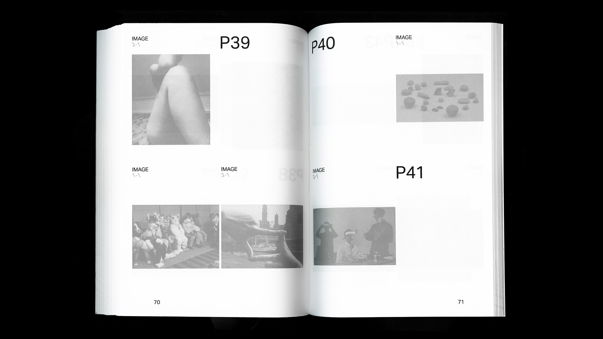
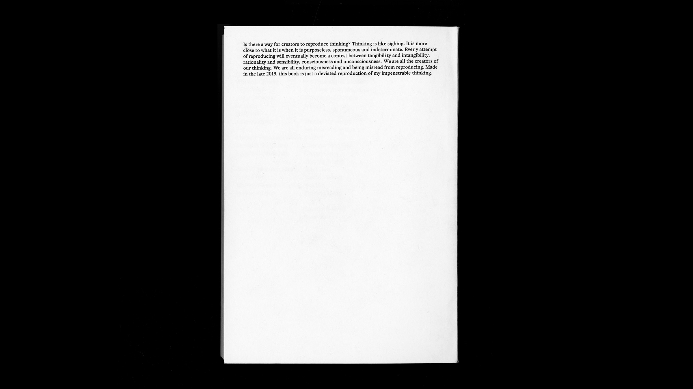
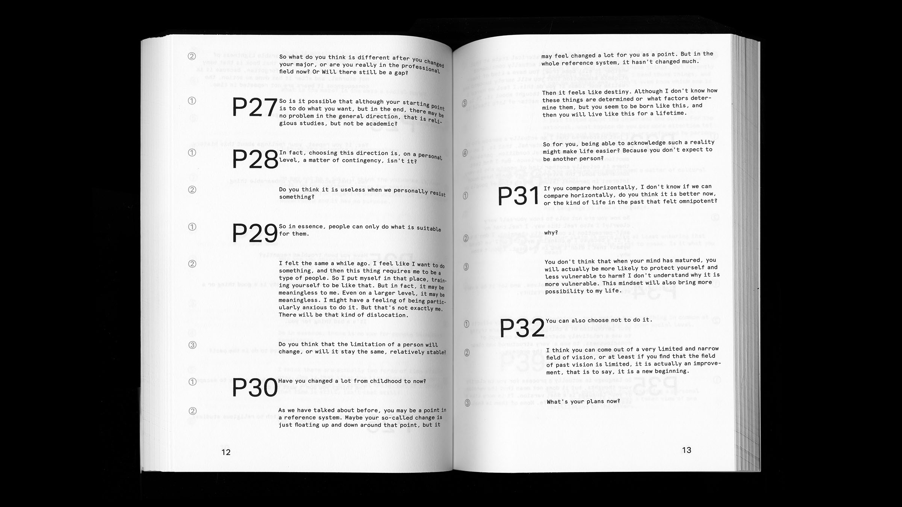
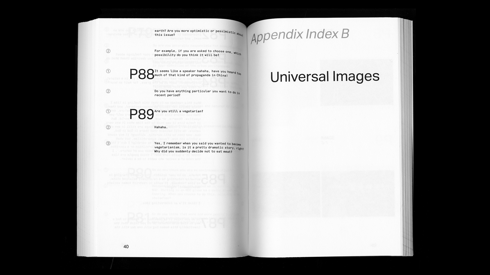
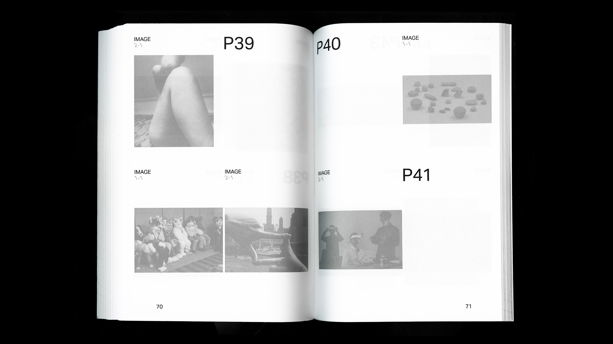
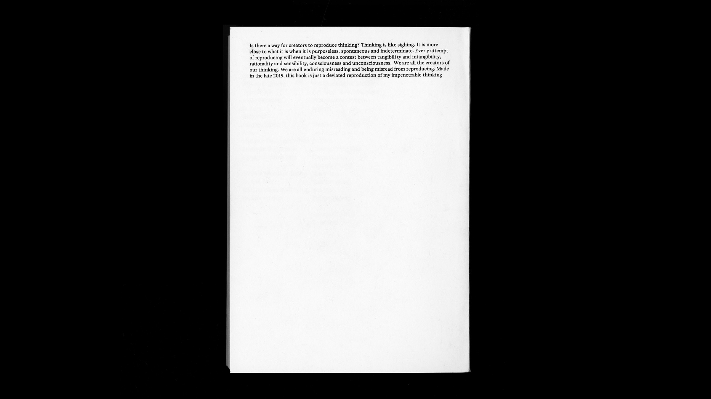